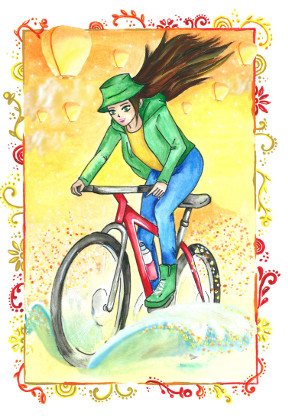

Все статьи
«Жизнь – это борьба!» или Национальная идея о необходимости трудностей и страданий

История нашей страны насыщена драматичными событиями: восстания, революции, раскулачивание, репрессии, ссылки, голод, войны. Память о страданиях людей, живших в то время, жива до сих пор. И по сей день многие из нас, потомков, скорбят и оплакивают судьбы загубленных, погибших, разыскивают следы пропавших без вести… То и дело по телевидению мелькают передачи, показывающие и рассказывающие подробности тех страшных времен, фотографии, кинохроники, рассказы участников событий (если речь идет о Великой Отечественной войне, Русско- Японской, об Афганской, Чеченской…).
На протяжении многих лет патриотическое воспитание подрастающего поколения (в дет.садах, школах) базировалось главным образом на идее ценности памяти о Великой Отечественной Войне и подвиге народа, отдававшего всё на борьбу с врагом внешним и внутренним.
Нам, живущим 70 лет спустя тех событий, стоит разобраться, что за материал на самом деле передается у нас из поколения в поколение под видом памяти (или вместе с памятью), насколько понят/выучен урок по войнам и борьбе с чем бы то ни было лично для нас.
Для этого проведем небольшое исследование =) Сначала поясню: память -это отпечаток события в нашей душе, в котором заложены картинки, звуки, запахи итд, плюс эмоциональные (и даже физические!) состояния (радость, страх, гнев –что угодно). Нас интересует именно последний компонент – эмоции, переживания. Любой опыт заряжен какой-то эмоцией, запечатлен у нас в психике и несет в себе некий посыл, умозаключение, жизненную установку. Любая психологическая установка, в свою очередь, может быть выражена словами.
Само исследование заключается в следующем: нужно вспомнить и записать все фразы на тему борьбы, трудностей, страдания, войны, которыми вы в какие-то моменты жизни руководствуетесь или которые «сами слетают с языка» в определенных ситуациях.
Например: «вся жизнь- это борьба», «страдания облагораживают», «трудности полезны/преодоление трудностей полезно», «без трудностей не бывает развития», «ни дня без боя», «живу, как на пороховой бочке», «кругом враги», «человек человеку –волк «все слишком хорошо идет, обязательно случится беда», «чтобы жить в достатке/счастливо, надо сначала помыкаться, помаяться/пострадать»,, «за счастье платят потом и кровью»…
Посмотрев на вышеперечисленные установки, наверное, многие согласятся, что нам досталась нелегкая память. Судя по записанным фразам выходит, что у нас лично (да и вообще у россиян, как потомков граждан СССР и царской России) есть склонность считать, что в жизни надо тяжело трудиться, много бороться, испытывать и преодолевать трудности, страдать, воевать, наконец, с врагами, чтобы быть достойными людьми, чтобы жить счастливо. Так ли это на самом деле? Действительно ли ради достижения счастья необходимо страдать и воевать?
Ответ: Нет. Страдания и борьба вовсе не гарантируют, что после них обязательно наступит безоблачная счастливая жизнь, увы. Но есть и «ура!» =) Счастливая человеческая жизнь – это норма, и она абсолютно реальна и доступна каждому, кто к ней стремится. Многие знают такую закономерность: «подобное притягивает подобное» (знающие говорят, что таков один из законов Вселенной). Поэтому счастье легче всего притягивается счастьем, радость-радостью, мир-миром...
Страдания во имя чего бы то ни было, непримиримая борьба и вражда порождают себе подобных и завязывают тугие узлы на судьбах людей, переплетая их друг с другом, нагромождая одни беды на другие. Поэтому стоит с большой осторожностью относиться к установкам, которые циркулируют в нашем обществе и с вниманием присмотреться к собственным убеждениям: чем они оборачиваются нам, какие события притягивают, о каких негармоничных связях сигналят? Любой узел можно и нужно развязать, любую череду бед можно завершить самым наилучшим образом для всех.
Действительно, немыслимо жить, надев розовые очки и делать вид, что жизнь- это сплошной веселый праздник. Конечно же, в жизни случается разное, бывают и трудности, и порой даже испытания. Но, помня о мудрости Жизни, мы понимаем, что любое событие, которое мы порой воспринимаем как трудность, дается нам не ради себя самого (трудность ради трудности), а для развития, осмысления и нахождения истины. И истина эта всегда добра по своей природе: она учит только ( ! ) доброте, состраданию, любви, благодарности... Понимая ее, мы внутренне освобождаемся и просветляемся, сложное в свете истины становится для нас простым и доступным, боль обращается легкостью и радостью.
Нет такого закона, который обязывал бы человека страдать ради достижения чего бы то ни было! Страдания являются добровольным выбором каждого и могут быть завершены или сведены к минимуму без каких бы то ни было потерь на любом этапе жизни.
В дополнение к вышесказанному приведу несколько примеров, показывающих, как в жизни проявляются «непройденные» и «пройденные» уроки по этим темам.
Человек, живущий по принципу «вся жизнь- борьба», стремится или вынужден почти все в своей жизни решать главным образом через борьбу и противостояние, при этом он не замечает иных путей решения вопросов. В результате, в жизни у этого человека будут всплывать ситуации, где ему придется бороться с людьми или обстоятельствами, или, наоборот, ему не будут давать даже шанса на борьбу, решая вопросы не в его пользу. Кроме того, в ответ на такую установку жизнь может подкинуть экстремальную ситуацию, например, болезнь, где человеку придется бороться на грани жизни и смерти.
Урок не пройден. В чем же его суть, посыл?
Всеми этими негативными ситуациями человеку показывается, что не стоит привязывать жизнь с ее бесконечным многообразием к одной только борьбе. Действительно, бывают ситуации, где необходимо проявить настойчивость и упорство, где-то даже и побороться, но этот способ взаимодействия должен быть скорее исключением, ведь существуют и другие, менее экстремальные пути: как вариант, можно научиться заранее видеть проблемные моменты и вовремя их решать, не доводя до крайности, можно научиться сотрудничать, находить компромиссы, если это возможно и приемлемо и т.д.,. В целом, отказавшись мерить жизнь по принципам вроде «вся жизнь- борьба», «с нами или против нас», «ни дня без боя» человек может научиться видеть более целостную картину жизни и найти наиболее гармоничный для себя способ общения с миром.
Урок не пройден. В чем же его суть, посыл?
Всеми этими негативными ситуациями человеку показывается, что не стоит привязывать жизнь с ее бесконечным многообразием к одной только борьбе. Действительно, бывают ситуации, где необходимо проявить настойчивость и упорство, где-то даже и побороться, но этот способ взаимодействия должен быть скорее исключением, ведь существуют и другие, менее экстремальные пути: как вариант, можно научиться заранее видеть проблемные моменты и вовремя их решать, не доводя до крайности, можно научиться сотрудничать, находить компромиссы, если это возможно и приемлемо и т.д.,. В целом, отказавшись мерить жизнь по принципам вроде «вся жизнь- борьба», «с нами или против нас», «ни дня без боя» человек может научиться видеть более целостную картину жизни и найти наиболее гармоничный для себя способ общения с миром.
Человек, которого война ничему не научила, может считать, что воевать надо, что война –это необходимость и даже благо. Здесь даже без комментариев…
Человек, не до конца разобравшийся в уроках войны, может в принципе понимать, что война –это плохо и страшно, может не хотеть войн, но при этом может жить в своей обычной мирной жизни с состоянием вражды/противостояния и постоянным желанием/необходимостью или нападать (ругать, ссориться, обвинять, ставить на место и т.д.) или отбиваться от «врагов»/ожидать нападения. Желание делить мир на «врагов» и «друзей»/«своих» и «чужих» -сюда же. Эмоционально такой человек не свободен от войны и, увы, на каком-то уровне поддерживает ее существование. Урок не пройден.
Человек, в полной мере осознающий, что война –это страшно, что ее не должно быть, может ПРИНЯТЬ РЕШЕНИЕ не воевать ни с кем в своей жизни (это решение можно воплощать в жизнь, например, тем, что человек отказывается брать в руки оружие и вступать в какие –либо боевые действия).
Человек, глубоко понимающий, что война зарождается в состоянии вражды и желании нападать, может решить осознанно отказаться проявлять агрессию по отношению к кому-либо в своей жизни, отказаться от жесткого деления людей на «врагов» и «друзей», отказаться принимать участие в конфликтах, ссорах. При этом, заметим, что он не отказывается ЗАЩИЩАТЬСЯ, если на него нападают, защищаться в той мере, в которой это необходимо в каждом отдельно взятом случае.
Человек, желающий сделать больше, может начать творить мир в своей жизни: помириться или примириться со всеми, с кем раньше ругался, простить/попросить прощения у тех, кого считал врагами, научиться с пониманием и спокойным терпением относиться к тем, кто живет и думает иначе, научиться в любой ситуации находить то, что способно объединить людей, сделать их ближе и понятнее друг другу, научиться в принципе бережно и уважительно обращаться со всем, что его окружает.
Человек, глубоко понимающий, что война зарождается в состоянии вражды и желании нападать, может решить осознанно отказаться проявлять агрессию по отношению к кому-либо в своей жизни, отказаться от жесткого деления людей на «врагов» и «друзей», отказаться принимать участие в конфликтах, ссорах. При этом, заметим, что он не отказывается ЗАЩИЩАТЬСЯ, если на него нападают, защищаться в той мере, в которой это необходимо в каждом отдельно взятом случае.
Человек, желающий сделать больше, может начать творить мир в своей жизни: помириться или примириться со всеми, с кем раньше ругался, простить/попросить прощения у тех, кого считал врагами, научиться с пониманием и спокойным терпением относиться к тем, кто живет и думает иначе, научиться в любой ситуации находить то, что способно объединить людей, сделать их ближе и понятнее друг другу, научиться в принципе бережно и уважительно обращаться со всем, что его окружает.